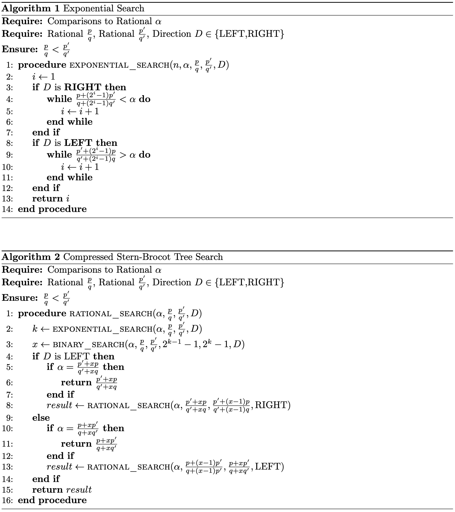
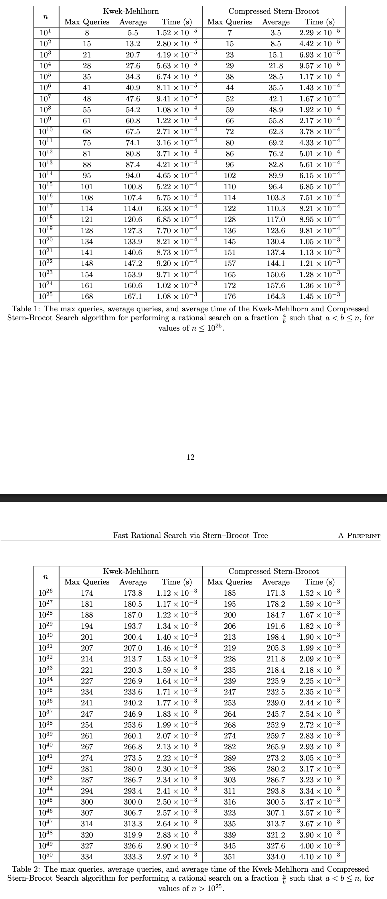
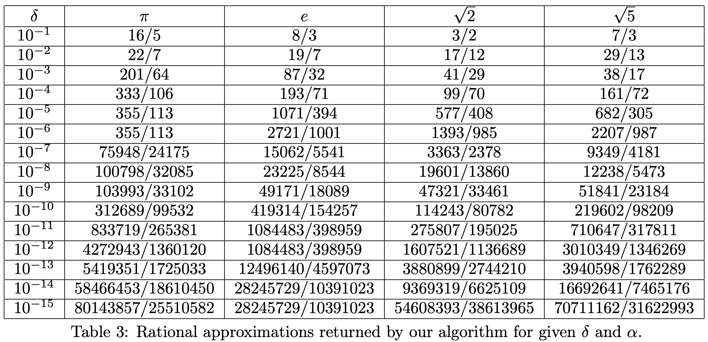

Stern–Brocot 트리: mediant와 BST 성질
두 분수 a/b, c/d의 mediant는 (a+c)/(b+d)이고, 항상 그 사이에 위치합니다. :contentReference[oaicite:9]{index=9} Stern–Brocot 트리는 이 규칙으로 (0,1)의 유리수를 BST처럼 탐색 가능하게 정렬합니다. :contentReference[oaicite:10]{index=10}
인터랙티브: 유한 트리(깊이) 생성
“한 칸씩 내려가기(naive)”는 최악 O(n) 쿼리까지 늘어날 수 있어 비효율적임(예: 1/n). :contentReference[oaicite:11]{index=11}
압축 경로 표현 ↔ Continued Fraction
압축 표현(런-렝스)
경로를 L/R의 반복 블록으로 묶어 L^{x1} R^{x2} L^{x3} ... 형태로 표현. 예: 9/14는 LRLR^3. :contentReference[oaicite:12]{index=12}
연분수와의 연결(3.1)
[0; a1,a2,...,ak] 연분수 계수들이 압축 경로의 블록 길이와 대응(마지막 블록은 ak−1로 조정). :contentReference[oaicite:13]{index=13}
알고리즘(Algorithm 1/2) — “압축 탐색”을 쿼리로 구현
핵심은 “블록 길이 x_i”를 한 칸씩 찾지 않고, 각 블록마다 exponential search + binary search로 찾는 것. :contentReference[oaicite:14]{index=14}
Algorithm 1: Exponential Search (논문 스크린샷)
Algorithm 1/2 전체 흐름. :contentReference[oaicite:15]{index=15}
쿼리 카운터(블록 단위)
논문은 한 블록 길이 x에 대해 쿼리 수를 최대 G(x)=2⌊log₂ x⌋+1로 둡니다. :contentReference[oaicite:16]{index=16}
이론 결과: 상한/하한 상수 비교
Theorem 1 (최악 상한)
denominator가 n인 미지의 α에 대해, 제안 알고리즘은 최악 2.5849·log₂ n 쿼리 이내(상수는 16/log₂ 73 근사)로 α를 찾는다고 증명. :contentReference[oaicite:17]{index=17}
하한 인스턴스 + 오픈 문제
(L^8 R^1)^k 형태 인스턴스에서 최소 2.4189·log₂ n 쿼리가 필요함을 구성. 정확한 최악 복잡도는 open. :contentReference[oaicite:18]{index=18}
실험: Kwek–Mehlhorn(KM) vs 제안 알고리즘
논문은 n ≤ 10^50까지 평균/최대 쿼리와 평균 시간을 비교(표 1/2). :contentReference[oaicite:19]{index=19}
표 1/2 스크린샷
KM vs Compressed Stern–Brocot. :contentReference[oaicite:20]{index=20}
차트(데이터 내장)
논문은 “worst-case 최적은 아니지만, 평균에서는 KM보다 적은 쿼리”를 보고. :contentReference[oaicite:21]{index=21}
미지의 실수 r에 대한 Best Rational Approximation
δ가 주어질 때, [r±δ] 안에서 분모가 최소인 유리 a/b를 비교 쿼리만으로 찾도록 알고리즘을 수정(3.4). :contentReference[oaicite:22]{index=22}
설명(3.4 요지)
각 블록 x를 찾은 뒤, “x 또는 x−1 위치의 분수가 [α±δ]에 들어오는지”를 추가 비교로 확인하고, 필요하면 1..x−1에서 한 번 더 binary search를 수행. :contentReference[oaicite:23]{index=23}
Table 3: δ별 근사 결과
π, e, √2, √5에 대한 결과(논문 표 3). :contentReference[oaicite:24]{index=24}